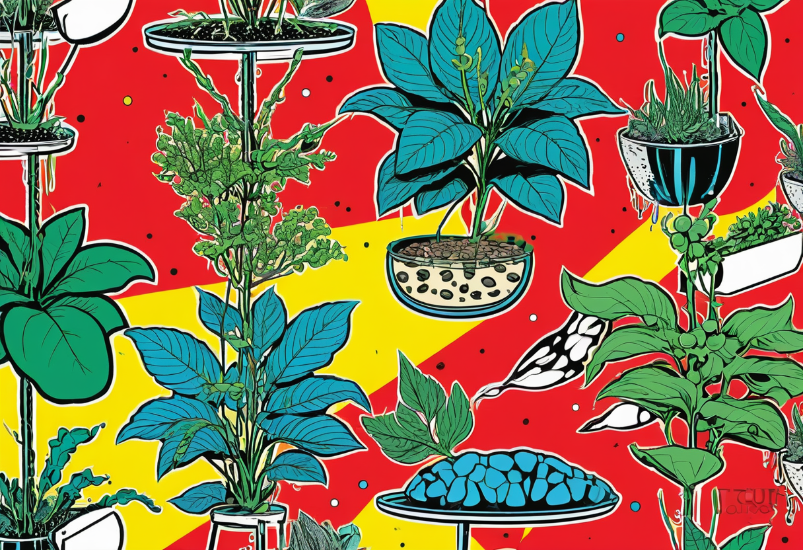
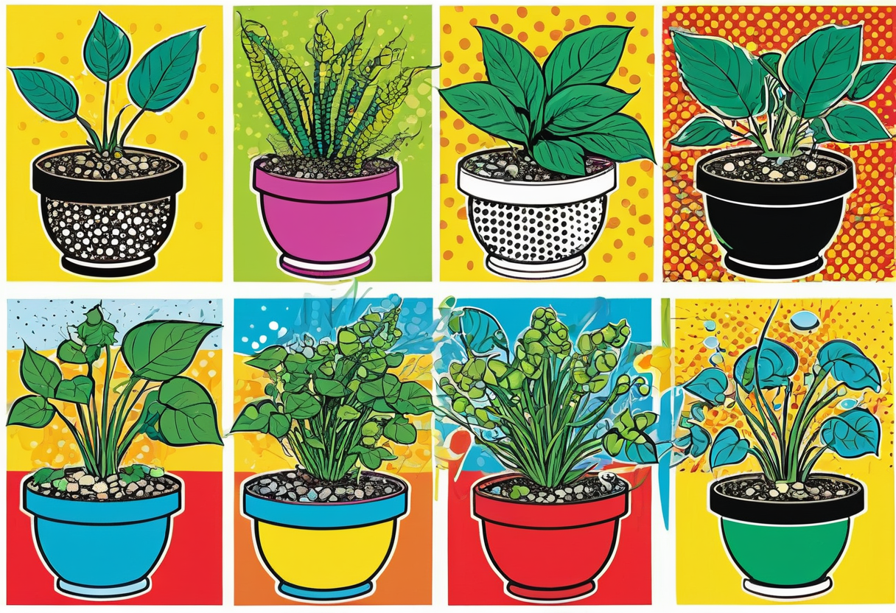

Aquarium Pflanzenvermehrung – Nachzucht und Teilung für üppiges Grün
Die Vermehrung von Aquarienpflanzen ist eine der lohnendsten Tätigkeiten in der Aquaristik. Nichts ist befriedigender, als aus einer einzelnen Pflanze einen ganzen, dichten Bestand heranzuziehen und die Ableger mit anderen Aquarianern zu teilen oder im Fachhandel abzugeben. Die meisten Aquarienpflanzen lassen sich auf einfache Weise vermehren – ob durch Teilung, Stecklinge, Ausläufer oder Brutknospen. In diesem umfassenden Leitfaden erfährst du, wie du deine Aquarienpflanzen erfolgreich vermehren und einen üppigen Pflanzenbestand aufbauen kannst.
Warum Pflanzenvermehrung?
Die Vermehrung von Aquarienpflanzen hat zahlreiche Vorteile. Erstens sparst du Geld: Ständig neue Pflanzen zu kaufen, kann ins Geld gehen, besonders bei großen Becken oder Aquascaping-Projekten. Zweitens gewinnst du wertvolle Erfahrung im Umgang mit den Bedürfnissen deiner Pflanzen und lernst, optimale Wachstumsbedingungen zu schaffen. Drittens kannst du Überschüsse mit befreundeten Aquarianern tauschen oder in lokalen Aquarienvereinen abgeben. Und schließlich ist die Pflanzenvermehrung einfach ein tolles Gefühl, wenn aus einem kleinen Ableger eine stattliche Pflanze wird.
Die Vermehrungsmethoden variieren je nach Pflanzenart. Grundsätzlich lassen sich alle Aquarienpflanzen in eine der folgenden Kategorien einteilen: Stängelpflanzen, Rosettenpflanzen, Moose, Aufsitzerpflanzen (Epiphyten) und Schwimmpflanzen. Jede Gruppe hat ihre eigene optimale Vermehrungstechnik.


Stängelpflanzen vermehren – Der Klassiker
Stängelpflanzen wie Rotala, Limnophila, Hygrophila, Ludwigia oder Bacopa sind die am einfachsten zu vermehrenden Aquarienpflanzen. Sie wachsen schnell und treiben an den Knoten (Nodien) Wurzeln aus. Die Vermehrung erfolgt durch Stecklinge:
- Wähle einen kräftigen, gesunden Trieb aus dem oberen Drittel der Pflanze. Die oberen 5–15 cm sind ideal – sie haben die aktivsten Wachstumsspitzen.
- Schneide den Trieb mit einer scharfen, sauberen Aquarienschere knapp unterhalb eines Blattknotens ab.
- Entferne die unteren 2–4 Blätter des Stecklings, sodass ein unbelaubter Stängelabschnitt von 1–3 cm übrig bleibt.
- Setze den Steckling mit dem kahlen Stängelabschnitt in den Bodengrund. Verwende eine feine Pinzette, um die Pflanze vorsichtig einzupflanzen, ohne die empfindlichen Wurzelansätze zu beschädigen.
- Nach 1–3 Wochen bildet der Steckling neue Wurzeln an den Knoten im Boden und beginnt, weiterzuwachsen.
Die Mutterpflanze treibt nach dem Schnitt an der Schnittstelle neu aus – sie bildet in der Regel zwei oder mehr Triebe, die nachwachsen. So wird die Mutterpflanze mit jedem Rückschnitt buschiger und verzweigter. Ein regelmäßiger Rückschnitt (alle 2–4 Wochen) hält die Pflanze kompakt und fördert dichtes Wachstum.
Tipp: Verwende eine scharfe, rostfreie Aquarienschere. Stumpfe Scheren quetschen den Stängel, was zu Fäulnis und schlechterer Bewurzelung führt. Desinfiziere die Schere vor dem Schneiden, um Krankheitsübertragung zu vermeiden.
Rosettenpflanzen teilen – Die bewährte Methode
Rosettenpflanzen wie Echinodorus (Schwertpflanzen), Cryptocoryne (Wasserbecher), Sagittaria oder Lilaeopsis vermehren sich durch Ausläufer oder Seitentriebe. Sie bilden an der Basis neue Tochterrosetten, die von der Mutterpflanze getrennt werden können.
- Warte, bis die Tochterpflanze mindestens 4–6 eigene Blätter und ein erkennbares Wurzelsystem ausgebildet hat.
- Grabe vorsichtig um die Tochterpflanze herum und durchtrenne den Verbindungstrieb zur Mutterpflanze mit einer Schere.
- Setze die Tochterpflanze an eine neue Stelle im Becken. Achte darauf, die Wurzeln nicht zu stark zu beschädigen.
- In den ersten Tagen nach der Trennung kann die Tochterpflanze etwas welken – das ist normal. Gib ihr Zeit, sich an den neuen Standort zu gewöhnen.
Cryptocorynen sind in der Vermehrung etwas spezieller: Sie reagieren empfindlich auf Standortwechsel und entwickeln oft das gefürchtete "Cryptocorynen-Schmelzen", bei dem sie alle Blätter verlieren. Das ist eine Schockreaktion, die nach dem Umpflanzen auftreten kann. In den meisten Fällen treibt die Pflanze nach einigen Wochen aus dem Rhizom wieder neu aus. Um das Risiko zu minimieren, schneide beim Teilen die Blätter auf die Hälfte zurück – das reduziert den Wasserbedarf der Pflanze und fördert die Wurzelbildung.
Teppichpflanzen teilen
Bodendecker wie Hemianthus callitrichoides (HC Cuba), Eleocharis parvula (Zwergnadelsimse), Monte Carlo oder Glossostigma lassen sich durch Teilung des Pflanzenteppichs vermehren. Schneide ein Stück des Teppichs mit einer Schere ab und pflanze es an einer freien Stelle wieder ein. Die Lücke im alten Teppich wächst innerhalb weniger Wochen zu.
Eleocharis und andere Graspflanzen bilden dichte Büschel. Du kannst einen Büschel vorsichtig aus dem Boden lösen, mit einer Schere horizontal teilen und die Hälften an verschiedenen Stellen neu einpflanzen. So vergrößerst du den Bestand rasch und gleichmäßig.
Rhizompflanzen teilen – Anubias, Bucephalandra und Javafarn
Aufsitzerpflanzen (Epiphyten) wie Anubias, Bucephalandra und Javafarn (Microsorum) haben ein horizontales, wucherndes Rhizom, aus dem Blätter und Wurzeln wachsen. Sie dürfen niemals vollständig eingepflanzt werden – das Rhizom muss frei liegen, sonst fault die Pflanze.
Die Vermehrung erfolgt durch Teilung des Rhizoms:
- Entnimm die Pflanze aus dem Aquarium oder löse sie von ihrem Aufsatz (Stein, Wurzel).
- Teile das Rhizom mit einer scharfen Schere oder einem Messer in Segmente von 3–5 cm Länge. Jedes Segment sollte mindestens 2–3 gesunde Blätter und einige Wurzelansätze haben.
- Setze die Teilstücke wieder auf Steine oder Wurzeln. Befestige sie mit Angelfaden, Gummiband oder Spezialkleber (Pflanzenkleber auf Cyanacrylat-Basis, der unter Wasser aushärtet).
- Nach 2–4 Wochen haben sich die Rhizomstücke mit Haftwurzeln am Untergrund verankert. Der Faden kann dann entfernt werden.
Anubias wächst extrem langsam – die Vermehrung erfordert Geduld. Ein Rhizomstück mit nur einem Blatt kann Monate brauchen, um sich zu einem stattlichen Büschel zu entwickeln. Bucephalandra ist etwas schneller, aber auch nicht mit Stängelpflanzen zu vergleichen. Javafarn ist die am schnellsten wachsende der Rhizompflanzen und treibt regelmäßig neue Blätter aus.
Brutknospen und Tochterpflanzen
Einige Aquarienpflanzen haben spezielle Vermehrungsorgane entwickelt, die die Nachzucht besonders einfach machen. Die bekanntesten Beispiele sind:
Javafarn-Brutknospen
An den Blatträndern des Javafarns (Microsorum pteropus) bilden sich schwarze Punkte (Sori), die Sporen enthalten. Aus diesen Sporen wachsen kleine Tochterpflanzen direkt auf dem Mutterblatt heran. Wenn die Jungpflanzen 2–3 Blätter und ein kleines Rhizom haben, können sie vorsichtig vom Mutterblatt abgezupft und auf Steine oder Holz gesetzt werden.
Sumpf-Drachenwurz-Tochterpflanzen
Der Sumpf-Drachenwurz (Echinodorus) bildet in der Natur Blütenschäfte, an denen Tochterpflanzen wachsen. Im Aquarium unter Wasser geschieht das seltener, aber bei starkem Licht und guter Nährstoffversorgung bilden manche Echinodorus-Arten Blütentriebe, die über die Wasseroberfläche reichen. An diesen Trieben entstehen Tochterpflanzen, die nach der Bewurzelung abgetrennt werden können.
Hornfarn und Wassersalat
Schwimmpflanzen wie Hornfarn (Ceratopteris) oder Wassersalat (Pistia stratiotes) vermehren sich über Tochterpflanzen, die von der Mutterpflanze abfallen. Du musst nichts weiter tun, als die Tochterpflanzen gelegentlich in Bereiche mit gutem Lichtwachstum zu lenken. Überschüssige Pflanzen können regelmäßig entnommen werden – sie sind ideales Tauschmaterial.
🛒 Empfohlene Produkte
Vermehrung durch Sporen und Samen
Die Vermehrung von Aquarienpflanzen durch Samen wird in der Aquaristik selten praktiziert, da sie aufwendiger ist und die Bedingungen genau stimmen müssen. Einige Farne (wie der Schwimmfarn Ceratopteris) bilden Sporen, die auf feuchtem Substrat keimen. Die Aufzucht aus Sporen ist die anspruchsvollste Methode und eher für erfahrene Aquarianer geeignet.
Im Handel sind Samen von Aquarienpflanzen erhältlich (z. B. Glossostigma, Hemianthus), die auf feuchte Erde ausgesät werden. Nach der Keimung wird das Substrat langsam überflutet. Diese Methode wird oft für die Initialbepflanzung von Aquascapes genutzt. Die Keimrate ist jedoch schwankend, und nicht alle Samen sind von zuverlässiger Qualität.
Optimale Bedingungen für die Pflanzenvermehrung
Damit die Vermehrung gelingt, müssen die Wachstumsbedingungen im Aquarium stimmen. Folgende Faktoren sind entscheidend:
- Licht: Die meisten Aquarienpflanzen benötigen 8–10 Stunden Licht pro Tag mit einer Lichtintensität von 30–50 Lumen pro Liter. Bei schwachem Licht wachsen die Pflanzen nur langsam und bilden weniger Ableger.
- CO₂: Eine CO₂-Düngung steigert das Pflanzenwachstum um das 3–10-fache und ist für die Vermehrung vieler Arten fast unverzichtbar. Der CO₂-Gehalt sollte bei 15–30 mg/l liegen.
- Nährstoffe: Ein ausgewogener Dünger mit Makro- (NPK) und Mikronährstoffen (Eisen, Zink, Mangan, Bor, Kupfer) ist für gesundes Wachstum und reichlich Ableger notwendig. Besonders Eisenmangel führt zu blassen, kümmernden Jungpflanzen.
- Temperatur: Die meisten Pflanzen vermehren sich optimal zwischen 24 und 28 °C. Unter 22 °C verlangsamt sich das Wachstum deutlich, über 30 °C steigt der Stress.
- Wasserwechsel: Regelmäßige Wasserwechsel (30 % wöchentlich) senken den Nitratspiegel und liefern frische Mikronährstoffe. Stagnierendes Wasser hemmt das Pflanzenwachstum.
Tipps für die Aufzucht in separaten Becken
Für die gezielte Massenvermehrung von Aquarienpflanzen lohnt sich die Einrichtung eines separaten Vermehrungsbeckens. Ein flaches Becken (30–50 Liter) mit starker Beleuchtung, CO₂-Düngung und flachem Wasserstand schafft optimale Wachstumsbedingungen. Der geringe Wasserstand sorgt dafür, dass das Licht den Beckenboden mit voller Intensität erreicht. In einem solchen Setup kannst du innerhalb weniger Wochen eine große Anzahl an Stecklingen, Tochterpflanzen und Ablegern heranziehen.
Einige Aquarianer nutzen auch einfache Kunststoffschalen oder Wannen mit Wasser, die sie auf der Fensterbank oder unter einer Pflanzenleuchte platzieren. Für viele einfache Stängelpflanzen und Cryptocorynen reicht das völlig aus. Wichtig ist, dass die Pflanzen nicht austrocknen und regelmäßig Dünger erhalten.
Fazit
Die Vermehrung von Aquarienpflanzen ist eine faszinierende und lohnende Praxis, die dir hilft, deinen Pflanzenbestand kostengünstig zu vergrößern, Erfahrungen zu sammeln und Überschüsse mit anderen zu teilen. Ob durch Stecklinge bei Stängelpflanzen, Teilung bei Rosettenpflanzen oder Rhizomteilung bei Epiphyten – die Vielfalt der Vermehrungsmethoden ist groß, aber jede für sich einfach zu erlernen. Mit den richtigen Wachstumsbedingungen – gutem Licht, CO₂-Versorgung, ausgewogener Düngung und regelmäßiger Pflege – wirst du schon bald einen üppigen, selbst gezogenen Pflanzenbestand in deinem Aquarium haben.
Mehr zur Pflege deiner Aquarienpflanzen erfährst du in unserem Pflanzen-Guide für Anfänger und im Düngung-Guide.